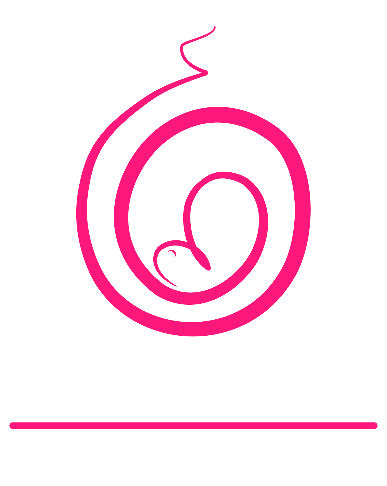

¿Que hacemos?
En la Especialidad Materno Fetal contamos con habilidades para dar la adecuada atención a pacientes con embarazo de alto riesgo. Además, valoramos las características del feto para mejorar los pronósticos maternos y fetales de los embarazos de alto riesgo, detectamos factores de riesgo de la paciente para prevenir complicaciones durante el embarazo como: preeclampsia, restricción en el crecimiento y diabetes gestacional, entre otras.
Ginecología y obstetricia: Campo de la medicina que se especializa en la atención de las mujeres y su sistema reproductor. Se centra en el diagnóstico y tratamiento de enfermedades de los órganos reproductores de la mujer también durante el embarazo y el parto.
Dra. Olga Castillo
Atendemos Urgencias
Las 24 horas del día los 7 días de la semanaPromociones


Servicios y Tratamientos
-
Control prenatal
Realización de ultrasonido
Pacientes con preclampsia
Pacientes con diabetes
Ginecología y Obstetricia
Medicina Materno Fetal
-
Exploración mamaria
Atención y tratamiento a sangrados uterinos anormales
Diagnóstico de patologías fetales a través del ultrasonido
Atendemos urgencias las 24 horas
Chequeo general
¿POR QUÉ SOMOS TU MEJOR OPCIÓN?
Médico especialista
La Dra Olga Castillo es especialista en Ginecología y Obstetricia con subespecialidad en Medicina Materno Fetal con amplia experiencia en el control prenatal de embarazos de alto riesgo y el cuidado de la salud de la mujer.
Tecnología de vanguardia
Contamos con la mejor tecnología para realizar diagnósticos oportunos, tratamientos y un adecuado seguimiento del embarazo y salud de la mujer.
Diagnósticos confiables
Gracias a nuestra experiencia profesional le brindamos una consulta materno fetal, ginecología y obstetricia ademas de un diagnóstico certero.
Calidad y atención humana
Te brindamos un trato cálido, integral y personalizado de acuerdo con las necesidades específicas de tu caso.